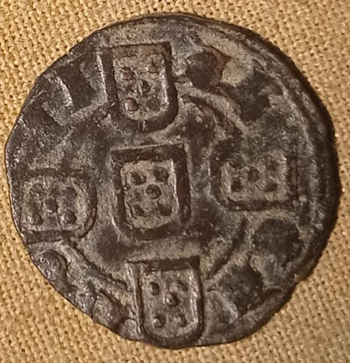

Há uma série de tempo fui contactado por um agiota científico para lhe fornecer fotos de dinheiros de D. Fernando, da minha colecção, para estudo. Forneci-lhe as fotos, os pesos e os diâmetros, Agradeceu-me e até parecia educado. Mas uns tempos depois, reputando o estudo por terminado, veio-me anunciar o facto com alguma gabarolice saloia, dizendo que só o publicava se eu lhe vendesse um dos dinheiros da minha colecção. O dito, por acaso do destino, apesar de me ter saído na rifa por 40 euros em leilão, era único na amostra e na tipologia da legenda. De modo que, confrontado com uma oferta de 400 euros, decidi fazer pouco do senhor. Pedi-lhe 1000 euros e a proposta foi válida por 7 dias, conforme aliás manda a nossa lei se ninguém a alterou entretanto. Há senhores que pensam que as moedas são como as bananas. Mas não são. E nem todas estão à venda, a não ser para tolos. Já quanto ao ágio científico, é pesado. Faz lembrar a cultura gótica de meados do primeiro milénio.